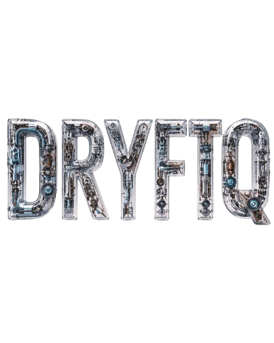

# Prevent the Unexpected.
DRYFTQ combines machine data, human insights and quantum intelligence to detect subtle process drift early—reducing downtime, waste and quality loss.
See drift before it becomes downtime.
Real-time intelligence for a more stable, efficient and profitable operation.
Early Drift Detection
Spot subtle process deviations before they turn into costly downtime, waste or quality loss.
Human + Machine Intelligence
Combines real machine data with human expertise and quantum models for deeper, faster insights.
Actionable Root Cause
Go beyond alerts with clear explanations and precise root cause analysis for faster resolution.
From raw signals to
reliable decisions.
DRYFTQ's quantum-powered platform turns complex industrial data into clear, actionable insights — in real time.
Collect
Raw sensor data
& machine signals
Detect
AI + quantum
anomaly detection
Explain
Root cause analysis
& insights
Act
Alerts, recommendations
& automation
Designed for the realities of the factory floor.
Built for industrial environments. Engineered for real-world impact.
Real-time Monitoring
Track machines, processes and KPIs in real time with minimal latency.
Quality Assurance
Detect defects and process variations early to maintain consistent quality.
Predictive Operations
Reduce unplanned downtime and optimize performance with AI-driven predictions.
Process Overview
LiveOne clear view of
process health.
Real-time data, AI insights and actionable alerts — all in one powerful platform.
- Live machine & process monitoring
- Anomaly detection & alerts
- Root cause analysis
- Customizable dashboards
Real results for a more reliable tomorrow.
Measurable outcomes. Lasting impact.
Downtime
Less unplanned stops, more productive hours.
Scrap & Waste
Higher yield, lower material loss.
Process Stability
Consistent quality, better performance.
Ready to prevent the unexpected?
Drive efficiency, quality and uptime with DRYFTQ.